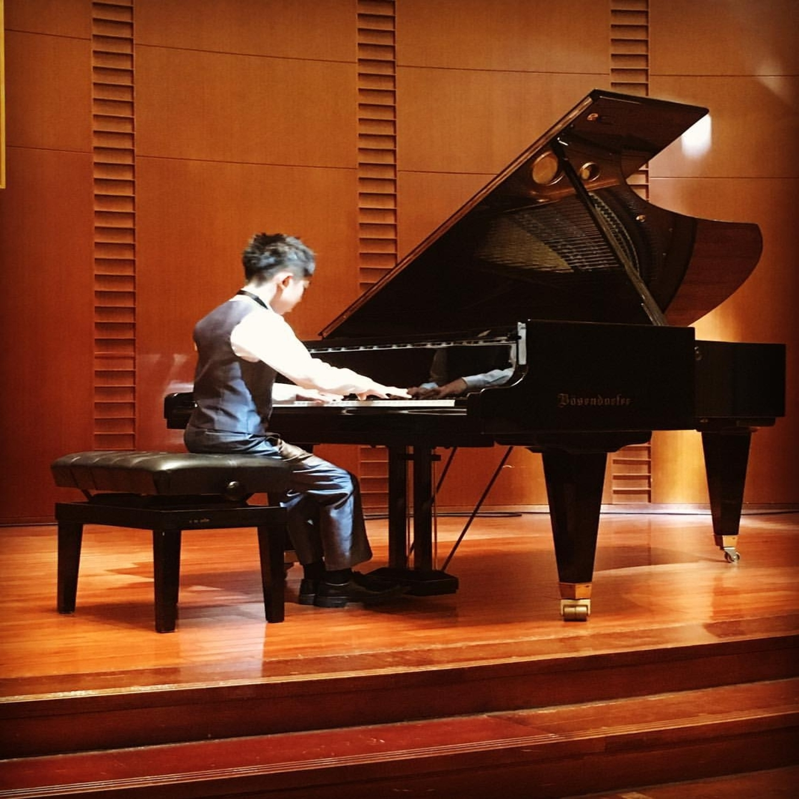
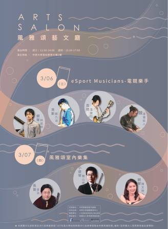
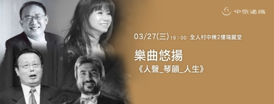
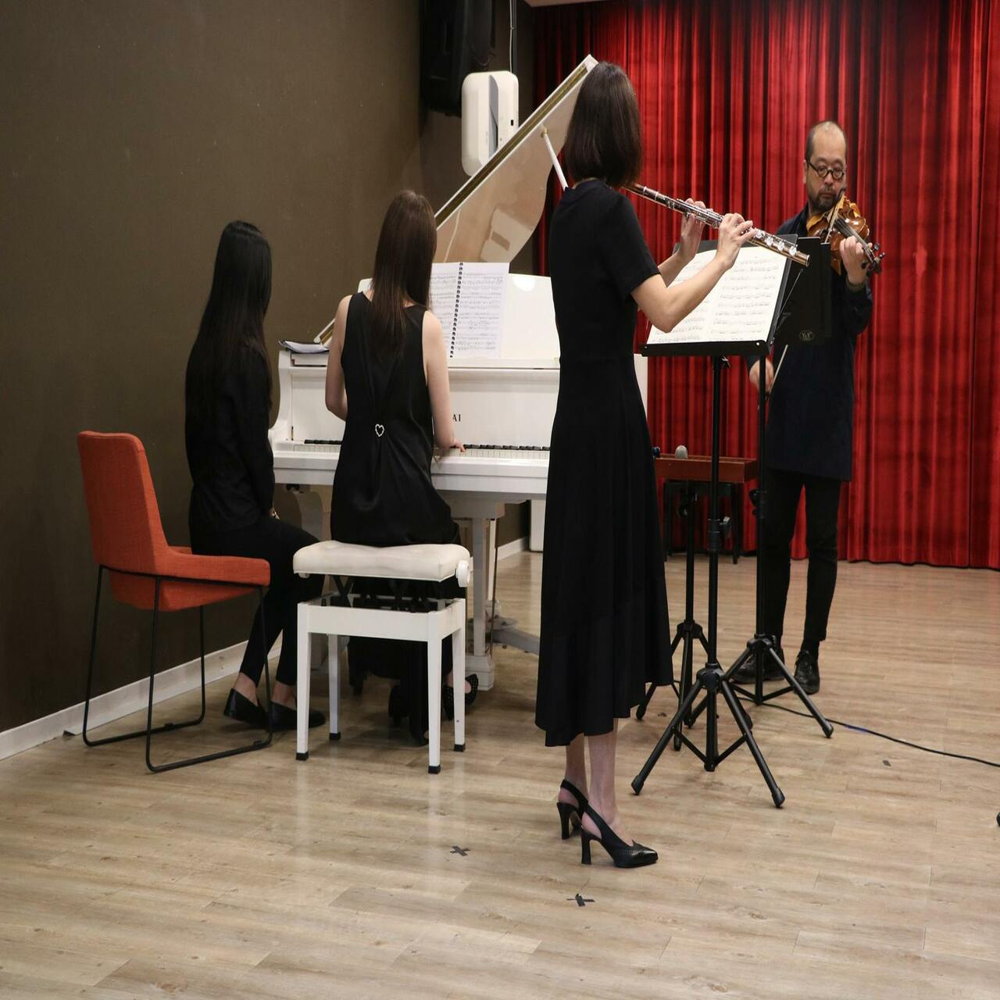
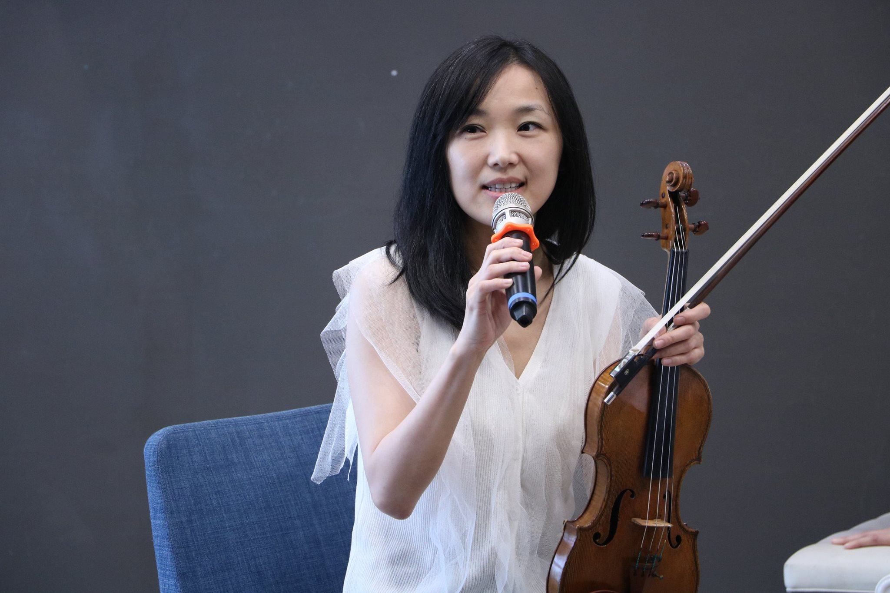

「音樂表演」
中原大學風雅頌藝文廳為音樂表演, 大師演講, 藝文欣賞的優雅空間，也為桃園中壢區帶來每周兩場精采的藝文活動。
風雅頌 |
|||
| 節目名稱 | 表演時間 | 表演地點 | 音樂曲風 |
| 菁英音樂家- 室內樂音樂會 | 02/27 | 風雅頌藝文廳 | 三重奏 |
| eSport Musicians- 電競樂手 | 03/06 | 風雅頌藝文廳 | 爵士四重奏 |
| 風雅頌室內樂集 | 03/07 | 風雅頌藝文廳 | 三重奏 |
| 楊曉恩爵士樂團feat. Jonathan Katz | 03/13 | 風雅頌藝文廳 | 爵士四重奏 |
| 重重烈火~ 女高音對女高音的吶喊 | 03/14 | 風雅頌藝文廳 | 重唱 |
| 【穿越時空來相會】魅力二人組 | 03/21 | 風雅頌藝文廳 | 二重奏 |
| 女人的愛情與一生( 克拉拉與舒曼) | 03/27 | 風雅頌藝文廳 | 獨唱 |
| 當代爵士之聲 | 03/28 | 風雅頌藝文廳 | 爵士四重奏 |
| 三個巴赫 | 04/03 | 風雅頌藝文廳 | 三重奏 |
| 散場後的旋律 | 04/10 | 風雅頌藝文廳 | 三重奏 |
| 春之樂享 | 04/11 | 風雅頌藝文廳 | 重唱 |
| 變換樂端 | 04/24 | 風雅頌藝文廳 | 四重奏 |
| 鋼琴三重奏的春季狂歡 | 04/25 | 風雅頌藝文廳 | 鋼琴三重奏及男高音 |
| 葉賀璞 三重奏Hope Yeh Trio | 05/01 | 風雅頌藝文廳 | 吉他、鼓組、貝斯 |
| Classical X Tap | 05/02 | 風雅頌藝文廳 | 木管五重奏與踢踏舞 |
| 台北青年管樂團室內樂集【管與絃的對話之民謠幻想】 | 05/08 | 風雅頌藝文廳 | 鋼琴四重奏 |
| 德奧經典：曼哈頓室內樂集 | 05/09 | 風雅頌藝文廳 | 室內樂 |
| 黃瑞豐 D.O.G.S 電風琴四重奏 | 05/15 | 風雅頌藝文廳 | 爵士四重奏 |
| 長笛與鋼琴的對話 | 05/16 | 風雅頌藝文廳 | 二重奏 |
| Alors On Chante! | 05/22 | 風雅頌藝文廳 | 重唱 |
| 浪漫狂潮─單簧管、中提琴、鋼琴三重奏音樂會 | 05/23( | 風雅頌藝文廳 | 三重奏 |
| 仲夏之露 | 05/29 | 風雅頌藝文廳 | 五重奏 |
| 曼哈頓室內樂集—跨越時空的小提琴小品 | 05/30 | 風雅頌藝文廳 | 二重奏 |
| 蔡世豪與陳昭惠四手聯彈音樂會 | 06/05 | 風雅頌藝文廳 | 鋼琴四手聯彈 |
| FIVE JAZZ MEN 爵士五重奏 | 06/06 | 風雅頌藝文廳 | 爵士五重奏 |
| Joni, Jazz and I | 06/12 | 風雅頌藝文廳 | 爵士五重奏 |
| G 弦之歌 | 06/13 | 風雅頌藝文廳 | 二重奏 |
|
|
|||
樂曲悠揚 |
|||
| 節目名稱 | 表演時間 | 表演地點 | 音樂曲風 |
| 人聲_琴韻_人生 | 03/27 | 校牧室 | 鋼琴、男中音、男高音、女中音 |
| 乘著音樂的翅膀 | 04/29 | 瑞麗堂 | 合唱 |
| 垂暮之燦 | 05/16 | 校牧室 | 小提琴、中提琴、大提琴 |
| 橫豎是美─藍斯頓的詩畫 | 05/28 | 瑞麗堂 | 鋼琴、長笛、單簧管 |
展開